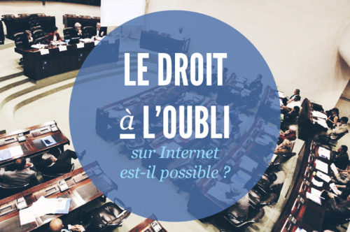

Le droit à l'oubli
« Une mécanique qui permettrait de préserver la liberté d’expression, la liberté de dire des choses et de changer d’avis, de se retirer d’un système, sur le réseau Internet. (Aussi, il s’agirait de) pouvoir continuer à affirmer son identité ou son intimité. »
Alex Türk
Deux chartes déjà signées en 2010 :
- Charte du Droit à l'oubli numérique dans la publicité ciblée
- Charte du Droit à l'oubli numérique dans les sites collaboratifs et moteurs de recherche
« Toute personne devrait avoir le droit de faire rectifier des données à caractère personnel la concernant, et disposer d'un "droit à l'oubli numérique" lorsque la conservation de ces données n'est pas conforme au présent règlement. En particulier, les personnes concernées devraient avoir le droit d'obtenir que leurs données soient effacées et ne soient plus traitées, lorsque ces données ne sont plus nécessaires au regard des finalités pour lesquelles elles ont été recueillies ou traitées, lorsque les personnes concernées ont retiré leur consentement au traitement ou lorsqu'elles s'opposent au traitement de données à caractère personnel les concernant ou encore, lorsque le traitement de leurs données à caractère personnel n'est pas conforme au présent règlement. »
Amendement 34, projet de la Commission européenne
On peut demander l'effacement des données quand :
- elles ne sont plus utilisées dans le cadre pour lequel elles ont été récoltées ;
- on a retiré son consentement au traitement ;
- on s'oppose au traitement des données personnelles qui nous concernent ;
- le traitement des données personnelles n'est pas conforme au règlement.
« Ni pertinent, ni nécessaire. »
« Quasi impossible sur le plan technique. »
« Ni réaliste, ni raisonable. »
« Cela reviendrait à déresponsabiliser l'internaute par rapport à ce qu'il publie. »
Medef (Mouvement des entreprises de France)
« Le droit à l'oubli est avant tout entre les mains de l'utilisateur. Seul lui peut décider de ce qu'il doit advenir de ses données dont il est à l'origine. »
Asic (Association des services Internet communautaires)